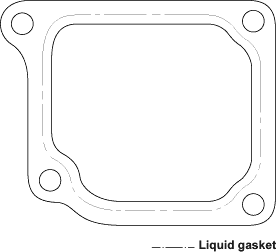
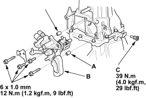
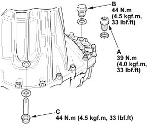
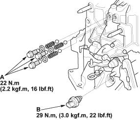

- Remove the dirt and oil from the shift lever cover sealing surface. Apply liquid gasket (P/N 08C70-K0234M) to the sealing surface.
NOTE: If 5 minutes have passed after applying liquid gasket, reapply it and assemble the housings. Allow it to cure at least 20 minutes after assembly before filling the transmission with oil.

- Install the 8 x 14 mm dowel pins (A), clutch line clip bracket (B), and shift lever assembly (C).

- Apply liquid gasket (P/N 08C70-K0234M) to the threads of the interlock bolt (D), and install it on the transmission housing.

- Install the drain plug (A), filler plug (B) and 10 mm flange bolt (C) with new washers.

- Install the detent bolts (A), springs, steel balls, with new washers.

- Apply liquid gasket (P/N 08C70-K0234M) to the threads of the back-up light switch (B), and install it on the transmission housing.